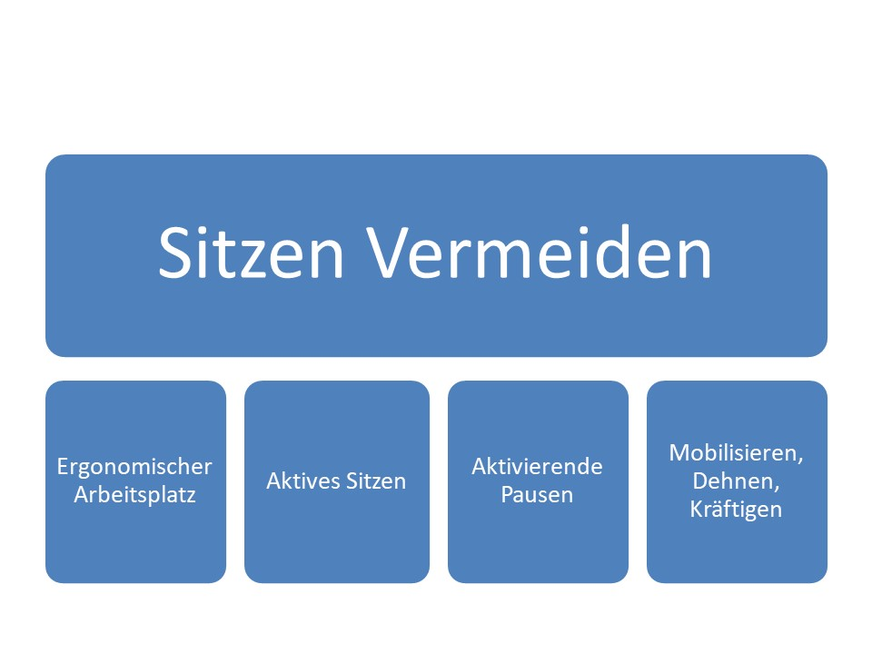

Rückenschmerzen kennt fast jeder. Sie können vielseitige Ursachen haben, eine davon ist zu langes Sitzen. Folgende Grafik erläutert, wie man die Problematik angehen kann:
Der Körper braucht Bewegung. Gerade bei längeren Sitzphasen ist es wichtig, sich immer wieder zu aktivieren. Manchmal kann man jedoch nicht aufstehen, und muss sich daher am Arbeitsplatz bewegen. folgendes Video zeigt mehrere Übungen, die einfach auf dem Stuhl ausgeführt werden können.
Sowohl zur Prävention als auch zur Behandlung von Rücken- und Nackenschmerzen können folgende Dehn- und Kräftigungsübungen gemacht werden.
Nun wisst ihr, wie man vor allem den Rücken und die Schulterpartie trainiert, weiter geht es hier
mit KniebeugenIm folgenden Video sehr ihr, wie Roman und Dominik eine Seite Schritt for Schritt erstellen: